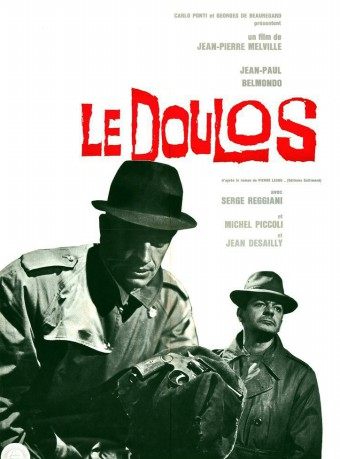

#7431 Der Teufel mit der weißen Weste
Alternativ: Le Doulos (Englischer Titel)
 
 IMDB-Wertung: 7.9 / 10
IMDB-Wertung: 7.9 / 10  Metascore: 0
Metascore: 0 
Burglar Maurice Faugel has just finished his sentence. He murders Gilbert Vanovre, a receiver, and steals the loot of a break-in. He is also preparing a house-breaking, and his friend Silien brings him the needed equipment. But Silien is a police informer ... A movie whose "all characters are two-faced, all characters are false", according to director Jean-Pierre Melville.
Jahr: 1963
Dauer: 108 Minuten
FSK: 12
Land: Frankreich Studio: Constantin FilmTonspuren:
Untertitel: Deutsch,
Auflösung: 1080p (1808x1080) Größe: 7833 MB
Genre: Thriller, Krimi
Regisseur: Jean-Pierre Melville
Drehbuch: Pierre Lesou
Soundtrack:
Darsteller:
 Jean-Paul Belmondo als Silien
Jean-Paul Belmondo als Silien- Serge Reggiani als Maurice Faugel
- Jean Desailly als Le commissaire Clain
- René Lefèvre als Gilbert Varnove
 Philippe Nahon als Remy
Philippe Nahon als Remy Michel Piccoli als Nuttheccio
Michel Piccoli als Nuttheccio- Volker Schlöndorff als L'homme dans la barre , uncredited
- Marcel Cuvelier als Un inspecteur
- Philippe March als Jean
- Fabienne Dali als Fabienne
- Monique Hennessy als Thérèse
- Carl Studer als Kern
- Christian Lude als Le docteur
- Jacques De Leon als Armand
- Jacques Léonard als Un inspecteur
- Paulette Breil als Anita
- Charles Bayard als Le vieil homme
- Daniel Crohem als L'nspecteur Salignari
- Charles Bouillaud als Le barman du Cotton Club
- Andrès als Le maître d'hôtel , uncredited
- Robert Blome als U, barman , uncredited
- Georges Sellier als Un barman , uncredited
- Dominique Zardi als Un homme de Nuttecchio , uncredited
Datei: X:\1963\Teufel mit der weißen Weste, Der (1963, FSK12, 1808x1080).mkv seit 10.11.2017
Festplatte: HD 1900-1970
 Es gibt insgesamt 23 Filme in der Gruppe '1963'
Es gibt insgesamt 23 Filme in der Gruppe '1963'